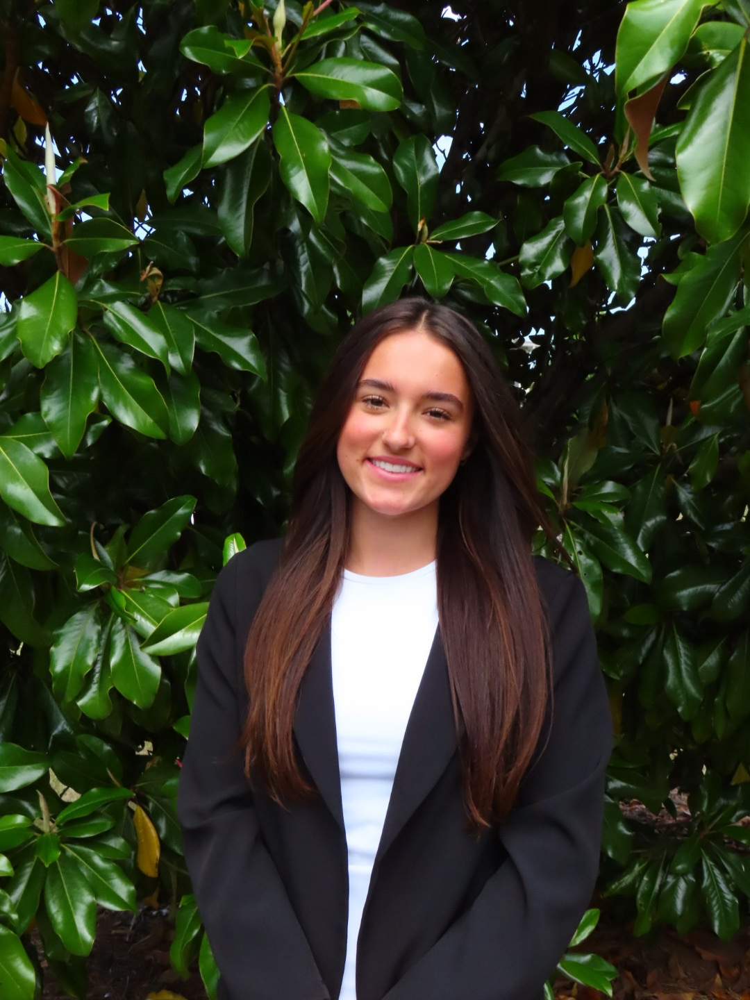

University of Georgia, Morehead Honors College
Athens, GA
Expected Graduation Date: May 2028
GPA: 3.98
Bachelor of Fine Arts, Graphic Design
Bachelor of Arts, Spanish
Certificate in New Media
Honors & Awards: Zell Miller Scholarship, OneUGA Scholarship, Presidential Scholar
Skills: Proficient in Adobe Creative Suite, proficient in Spanish, effective customer service

VannGo Designs, Albany, GA Summer 2026
Graphic Design Intern and Assistant
- Receive one-on-one mentorship from the owner of VannGo.
- Gain experience in the printing and large format side of design.
- Improve skills in the Adobe Creative Suite.
- Meet with clients to assess their design wants and needs.
Leci’s Boutique, Athens, GA Fall 2025
Graphic Design Intern
- Designed various social media posts and website embellishments using Adobe InDesign.
- Assessed client’s and target audience’s needs in order to produce the most effective designs.
- Created variations of designs and color palettes for each project in order to insure client satisfaction.
CJ Consulting & Design, Albany, GA June 2025-Present
Graphic Design Consultant
- Designed new logo and business card, offering variations based on client’s needs.
- Offer design advice on any posters or worksheet layouts presented by the client.
Volvo Car Dealership, Hilton Head, SC June 2024
Muralist
- Assessed the needs of the client.
- Designed a mock-up draft image of the mural and accepted feedback from the client.
- Painted a well-crafted, large mural quickly and efficiently.
Albany Museum of Art Teen Art Board, Albany, GA August 2023-May 2024
Secretary
- Developed ideas for community improvement through artistic means, including a public mural.
- Collaborated with a team in order to discuss various issues and solutions.
- Managed a financial budget, raised additional funds, and met with potential donors.